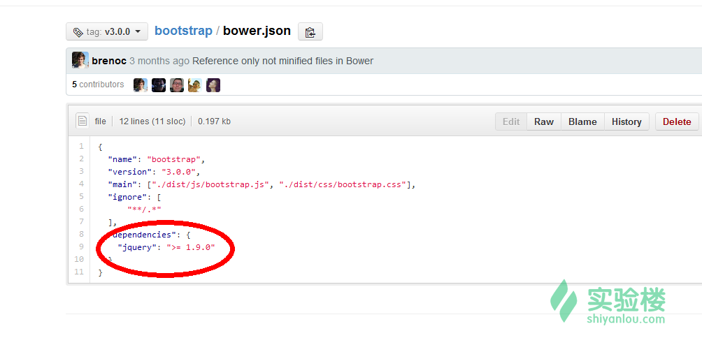
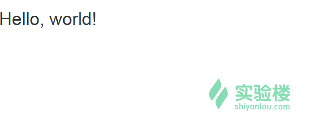
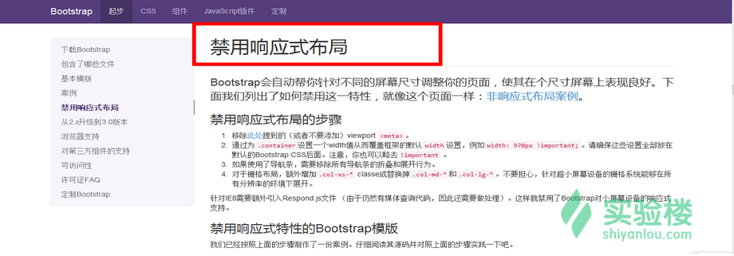

本实验课程基于《Bootstrap3.0 入门学习》制作，可查看原版链接：http://www.cnblogs.com/aehyok/p/3404867.html
本次实验我们将学习bootstrap的预备知识。
本课程中的所有源码可以通过以下方式 git clone 到本地:
git clone https://github.com/shiyanlou/course
Bootstrap 是 Twitter 推出的一个开源的用于前端开发的工具包。它由 Twitter 的设计师 Mark Otto 和 Jacob Thornton 合作开发，是一个 CSS/HTML 框架。Bootstrap 提供了优雅的 HTML 和 CSS 规范，它即是由动态 CSS 语言 Less 写成。Bootstrap 一经推出后颇受欢迎，一直是 GitHub 上的热门开源项目，包括 NASA 的 MSNBC（微软全国广播公司）的 Breaking News 都使用了该项目。Bootstrap 是基于 jQuery 框架开发的，它在 jQuery 框架的基础上进行了更为个性化和人性化的完善，形成一套自己独有的网站风格，并兼容大部分 jQuery 插件。Bootstrap 中包含了丰富的 Web 组件，根据这些组件，可以快速的搭建一个漂亮、功能完备的网站。其中包括以下组件： 下拉菜单、按钮组、按钮下拉菜单、导航、导航条、面包屑、分页、排版、缩略图、警告对话框、进度条、媒体对象等。Bootstrap 自带了 13 个 jQuery 插件，这些插件为 Bootstrap 中的组件赋予了“生命”。其中包括： 模式对话框、标签页、滚动条、弹出框等。可以对 Bootstrap 中所有的 CSS 变量进行修改，依据自己的需求裁剪代码。
学习本门课程前，如果有 html、css 和 JavaScript 的基础，会让你有飞一般的感觉。
本实验环境已下载所需软件搭建了相关环境，无需我们再次搭建环以下内容仅用于学习使用
使用命令获取：
$wget http://labfile.oss.aliyuncs.com/bootstrap-3.3.0-dist.zip
官网的文件很详细简单，对于下载来说也有多种方式。对于我们开发者来说，估计最简单的方式就是直接下载编译和压缩后的 CSS、JavaScript 文件，另外还包含字体文件，但是不包含文档和源码文件。
解压文件：
$ unzip bootstrap-3.3.0-dist.zip
解压包之后可以发现包含三个文件夹 css、fonts、js。
可以来查看三个文件夹中的文件
dist
├── css
│ ├── bootstrap.css
│ ├── bootstrap.css.map
│ ├── bootstrap.min.css
│ ├── bootstrap-theme.css
│ ├── bootstrap-theme.css.map
│ └── bootstrap-theme.min.css
├── fonts
│ ├── glyphicons-halflings-regular.eot
│ ├── glyphicons-halflings-regular.svg
│ ├── glyphicons-halflings-regular.ttf
│ └── glyphicons-halflings-regular.woff
└── js
├── bootstrap.js
├── bootstrap.min.js
└── npm.js
这是最基本的 Bootstrap 组织形式：未压缩版的文件可以在任意 web 项目中直接使用。我们提供了压缩(bootstrap.min.)与未压缩 (bootstrap.)的 CSS 和 JS 文件。字体图标文件来自于 Glyphicons。
在 github 上查看 bootstrap 项目源码twbs/bootstrap
在bower.json文件中列出了 Bootstrap 所支持的 jQuery 版本。

可以看到依赖的 jQuery 库的版本>=1.9.1 即可。
下载 jQuery 另存到与 Bootstrap 文件夹下的 js 文件夹里面。
$wget http://labfile.oss.aliyuncs.com/jquery-2.0.3.js
注意：所有 Bootstrap 插件都依赖 jQuery。而且在正式的项目当中我们推荐使用压缩之后的版本，因为它的体积很小（里面取出了注释的文字和空白）。
我们创建了一个最简单的基本模版
<!DOCTYPE html>
<html>
<head>
<title>Bootstrap</title>
<meta name="viewport" content="width=device-width, initial-scale=1.0">
<!-- Bootstrap -->
<link href="css/bootstrap.min.css" rel="stylesheet" media="screen">
<!-- HTML5 Shim and Respond.js IE8 support of HTML5 elements and media queries -->
<!-- WARNING: Respond.js doesn't work if you view the page via file:// -->
<!--[if lt IE 9]>
<script src="http://labfile.oss.aliyuncs.com/html5shiv/3.7.0/html5shiv.js"></script>
<script src="http://labfile.oss.aliyuncs.com/respond.js/1.3.0/respond.min.js"></script>
<![endif]-->
</head>
<body>
<h1>Hello, world!</h1>
<script src="js/jquery-2.0.3.js"></script>
<script src="js/bootstrap.min.js"></script>
</body>
</html>
1.首先我们可以将 Bootstrap 的样式文件引用到网页中
<link href="css/bootstrap.min.css" rel="stylesheet" media="screen">
2.如果你需要使用 Bootstrap 架构提供 JavaScript 插件的话，那么需要将架构的 js 文件链接引用到网页中，上面也有提到过 JavaScript 插件都是依赖与 jQuery 库的，所以我们当然也需要链接引用 jquery 的库文件
<script src="js/jquery-2.0.3.js"></script>
<script src="js/bootstrap.min.js"></script>
3.viewport 的标签，这个标签可以修改在大部分的移动设备上面的显示，为了确保适当的绘制和触屏缩放。
<meta name="viewport" content="width=device-width, initial-scale=1.0">
4.我们使用的 html5 的一些新的标签，那么在 IE9 以下的浏览器并不支持这些标签，也不能为这些标签进行添加样式。那么修复这个问题我们需要链接引用的文件如下
<!--[if lt IE 9]>
<script src="http://labfile.oss.aliyuncs.com/html5shiv/3.7.0/html5shiv.js"></script>
<script src="http://labfile.oss.aliyuncs.com/respond.js/1.3.0/respond.min.js"></script>
<![endif]-->
意思就是说如果用户 IE 浏览器的版本小于 IE9，那么就会加载这两个 js 文件库，现在就可以使用这些新的标签，并且可以在这些标签上添加样式了。
就这样我们最简单的 Hello World!页面呈现在了大家面前。

在上面我们也启用了响应式的布局。当然有些网站可能并不需要进行响应式的布局，我们就需要进行手动的禁用这个布局，这个文档当中也有详细的说明。
